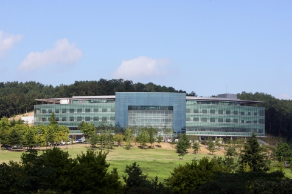
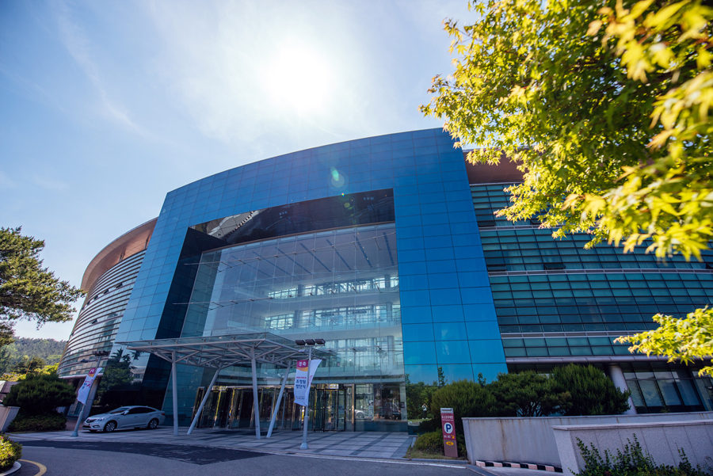
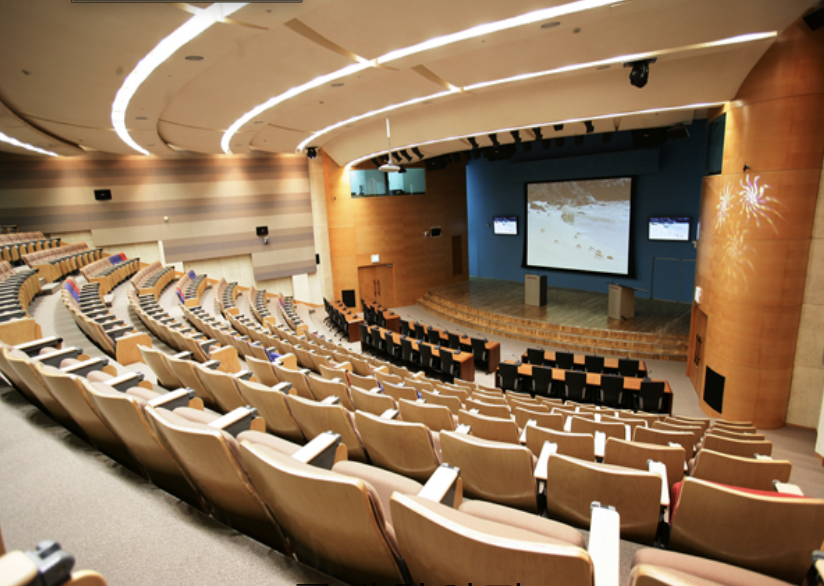
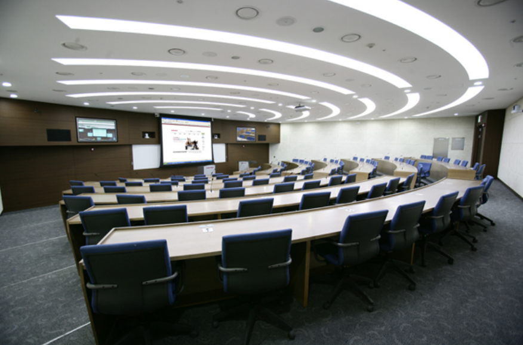

General Information
Key Dates
Registration & Event Dates
- Registration Deadline: August 15, 2026
- Industry Day(Seoul): August 24, 2026
- ASPAI Conference(Pohang): August 25–26, 2026
- Summer School(Pohang): August 27–28, 2026
Submission (Conference)
- Abstract Submission: March 30, 2026
- Paper Submission: April 10, 2026
- Poster Submission: May 31, 2026
- Notification: April 30, 2026
- Camera-Ready: May 14, 2026
Accommodation
Seoul (Industry Day)
There are many accommodation options available in Seoul, allowing participants to choose a hotel that best suits their preferences and budget.
We recommend making reservations as early as possible, as hotel availability may become limited during peak travel periods.
For your convenience, several hotels are located near the conference venue, including:
- Oakwood Premier COEX Center (Industry Day venue)
- AC Hotel Seoul Gangnam
- L7 GANGNAM by LOTTE HOTELS
Please note that participants are responsible for making their own hotel reservations. The conference organizers do not provide a designated conference hotel.
Pohang (Conference & Summer School)
Pohang offers a variety of accommodation options for conference and summer school participants.
We encourage attendees to choose accommodations according to their preferences and make reservations as early as possible.
The following hotels are located near POSTECH:
- Lahan Hotel Pohang (approximately 20–30 minutes by car)
Located along Yeongildae Beach, the most vibrant and popular waterfront area in Pohang. - Hotel Yeongildae (approximately 5–10 minutes by car)
Situated in a quiet wooded area near POSTECH. The hotel has a limited number of rooms (approximately 10 rooms available). - Noblion Hotel (approximately 5–10 minutes by car)
For the convenience of participants staying at Lahan Hotel Pohang and Hotel Yeongildae, shuttle buses will be provided:
- August 25: Hotels → POSTECH (around 11 o'clock) and POSTECH → Hotels (after the program)
- August 26: Hotels → POSTECH (morning) and POSTECH → Hotels (after the program)
Please note that Hotel Yeongildae's reservation website is currently available only in Korean. If you experience any difficulties making a reservation, please contact Eon Lee at eon7777@postech.ac.kr for assistance.
Venue
Process Mining Industry Day
Oakwood Premier Coex Center Seoul
46, Teheran-ro 87-gil, Gangnam-gu, Seoul
Location
Conference & Summer School
POSTECH · POSCO International Center
77 Cheongam-ro, Nam-gu, Pohang, South Korea
The conference and summer school will be held at POSTECH's POSCO International Center, one of Korea's leading science and technology universities.




Location
Getting to Pohang
1. (Seoul → Pohang) By High-Speed Train (Recommended)
The most convenient way to reach POSTECH is by KTX or SRT. Pohang Station is located approximately 15 minutes by taxi from the POSTECH campus.
KTX (Seoul Station → Pohang Station)
- Travel time: Approximately 2 hours 15–35 minutes
- Frequent departures throughout the day
- First departure: 05:38
- Last departure: 22:18
Representative departures are shown below.
| Departure (Seoul) | Arrival (Pohang) | Duration |
|---|---|---|
| 05:38 | 08:08 | 2h 30m |
| 06:30 | 08:51 | 2h 21m |
| 06:43 | 09:09 | 2h 26m |
| 08:35 | 10:55 | 2h 20m |
| 10:43 | 13:13 | 2h 30m |
| 12:39 | 15:00 | 2h 21m |
| 15:50 | 18:05 | 2h 15m |
| 17:33 | 20:04 | 2h 31m |
| 20:38 | 23:08 | 2h 30m |
SRT (Suseo Station → Pohang Station)
Direct SRT services are also available.
| Departure (Suseo) | Arrival (Pohang) |
|---|---|
| 06:30 | 08:52 |
| 16:34 | 19:02 |
Tickets can be reserved online:
- KTX (KORAIL): https://www.korail.com/global/eng/ticket
- SRT: https://etk.srail.kr/main.do?language=EN
From Pohang Station to POSTECH
- Taxi: 15 minutes
- Fare: approximately KRW 18,000 (USD 12)
2. (Seoul → Pohang) By Air
Participants may also fly directly from Gimpo International Airport (GMP) to Pohang Gyeongju Airport (KPO).
| Route | Departure | Arrival |
|---|---|---|
| Gimpo (GMP) → Pohang (KPO) | 08:55 | 09:55 |
From Pohang Gyeongju Airport to POSTECH
- Taxi: 20–25 minutes
- Fare: approximately KRW 22,000 (USD 15)
3. (Busan → Pohang) Via Gimhae International Airport
For participants arriving on international flights, Gimhae International Airport (PUS) in Busan is another convenient gateway to Pohang.
From Gimhae Airport, you may:
- Take a taxi directly to POSTECH
- Travel time: approximately 1.5 hours
- Fare: approximately KRW 150,000 (USD 100)
Alternatively, you may travel from Busan to Pohang by intercity bus or train, followed by a taxi to POSTECH. These options are generally less expensive but require transfers.
Recommendation: For most participants arriving from Seoul, we recommend taking the KTX or SRT, which offers the fastest and most convenient access to POSTECH. International participants arriving via Busan may find Gimhae International Airport to be a convenient alternative gateway to Pohang.
Organizing Committee
Program Chairs
Mahendrawathi ER
Institut Teknologi Sepuluh Nopember, Indonesia
Jongchan Kim
Yonsei University, Korea
Program Committee
Judges for the Best Paper Award
Poornima Dhall
Lead Partner Manager, Celonis, India
Julian Lebherz
Strategic Advisor, SAP, Singapore
Asif Khaleel
Head Digital Process Twin, Shell, India